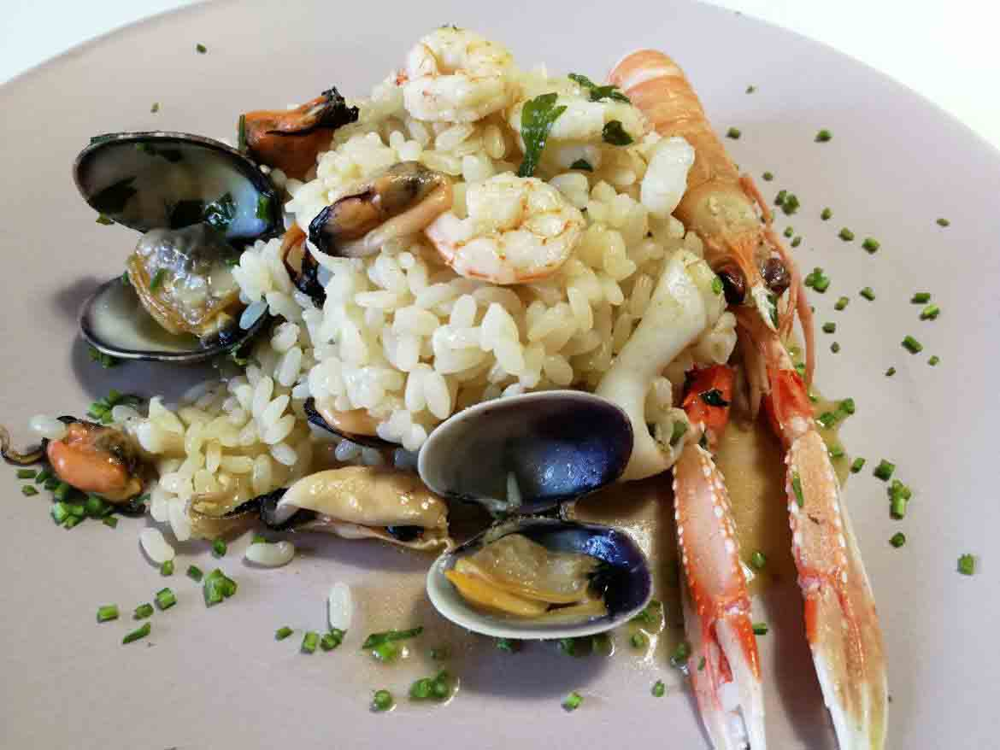

How to Make Seafood Risotto

Description
Risotto di Mare is a delightful seafood dish that brings together the
creamy richness of risotto with the tantalizing flavors of the sea. This
recipe features a medley of shrimp, scallops, mussels, and calamari, each
morsel cooked to perfection and combined with Arborio rice. As the rice
slowly simmers in a fragrant broth and white wine, it absorbs all the
exquisite flavors, resulting in a velvety and luxurious texture that
beautifully complements the seafood.
With the addition of crushed tomatoes, Parmesan cheese, butter, and a
sprinkle of fresh parsley, this Risotto di Mare becomes a true culinary
masterpiece. Each spoonful is a symphony of taste, where the delicate
sweetness of the seafood intertwines harmoniously with the savory notes of
the rice. Served hot and garnished with a touch of parsley, this dish
invites you to savor the essence of the ocean, transporting your senses to
a coastal paradise. Prepare to indulge in this irresistible risotto that
is sure to impress and leave you longing for more.
Ingredients
- 1 cup Arborio rice
-
1/2 pound (225 grams) mixed seafood (such as shrimp, scallops, mussels,
and calamari), cleaned and deveined
- 1 tablespoon olive oil
- 1 small onion, finely chopped
- 2 cloves garlic, minced
- 1/2 cup dry white wine
- 3 cups fish or vegetable broth
- 1/2 cup crushed tomatoes
- 1/4 cup grated Parmesan cheese
- 2 tablespoons butter
- 2 tablespoons chopped fresh parsley
- Salt and pepper to taste
- Lemon wedges, for serving
Instructions
-
In a large saucepan, heat the olive oil over medium heat. Add the onion
and garlic and sauté until the onion becomes translucent.
-
Add the Arborio rice to the pan and stir to coat the grains with the
oil. Toast the rice for about a minute until it becomes slightly
translucent at the edges.
- Pour in the white wine and stir until it is absorbed by the rice.
-
Begin adding the fish or vegetable broth, about 1/2 cup at a time,
stirring continuously. Allow each addition of broth to be absorbed
before adding more. Continue this process until the rice is al dente,
cooked through but still slightly firm to the bite. It should take
approximately 20 minutes.
-
While the rice is cooking, heat a separate skillet over medium heat and
add the mixed seafood. Cook until the seafood is opaque and cooked
through, which should take about 5 minutes.
-
Stir in the crushed tomatoes and cooked seafood into the risotto. Cook
for an additional 2-3 minutes until everything is well combined and
heated through.
-
Remove the risotto from the heat and stir in the Parmesan cheese,
butter, and chopped parsley. Season with salt and pepper to taste.
-
Allow the risotto to rest for a few minutes to allow the flavors to meld
together.
-
Serve the Risotto di Mare hot, garnished with additional chopped parsley
and lemon wedges on the side for squeezing over the risotto.